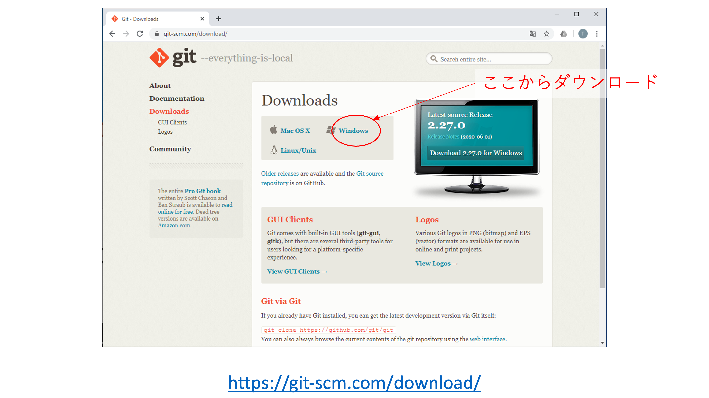
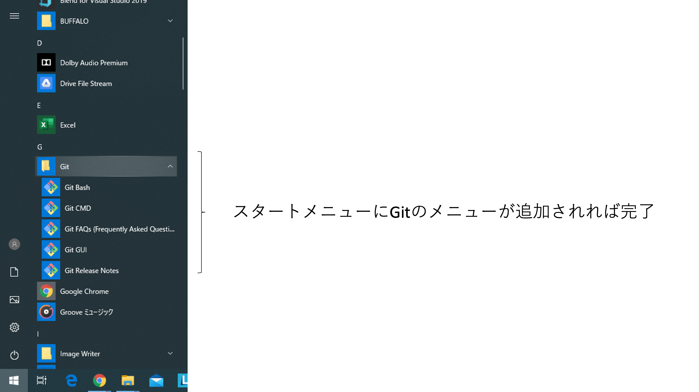
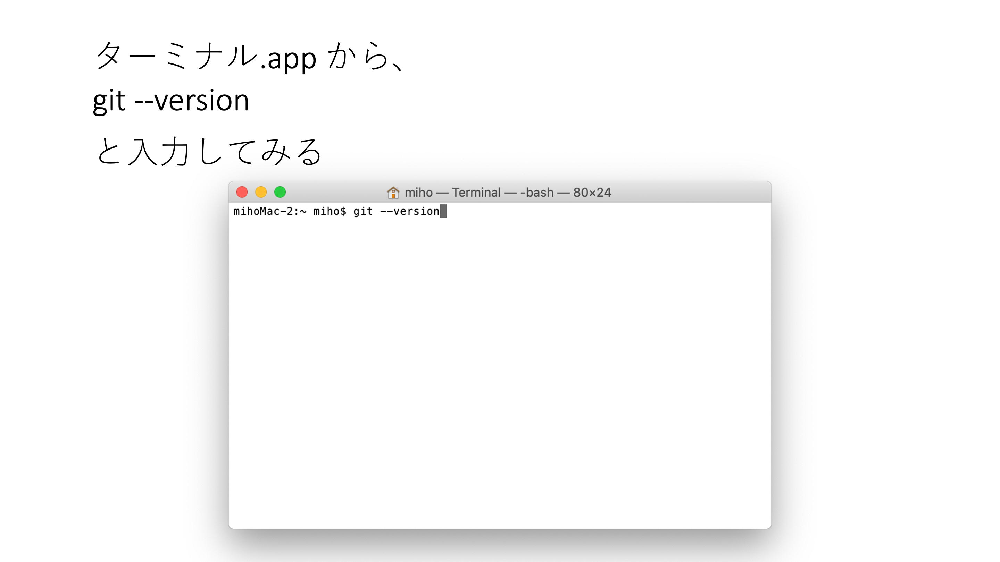
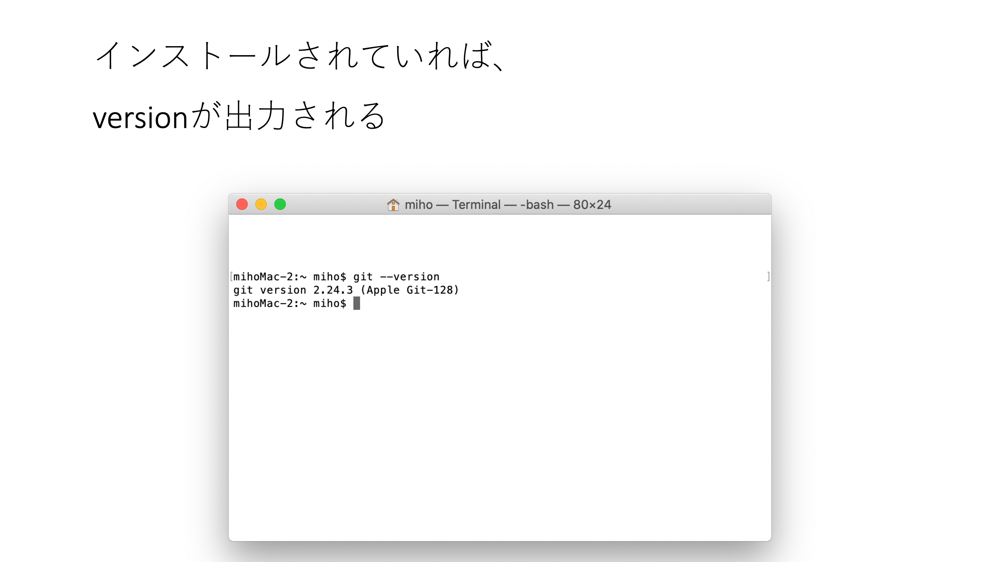
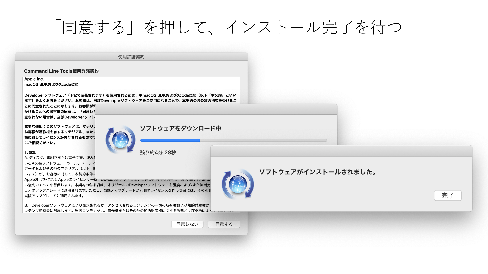
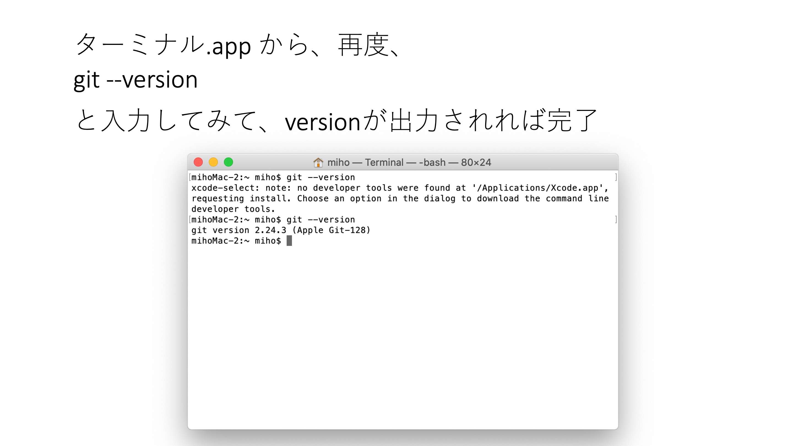

Gitによるソースコード管理2 + HTMLについて理解する
第11回 7月2日(火) 5限 (16:50〜18:30) J402
今日の内容
自分のPC上でソースを編集
HTMLのおさらい
imgタグ
URLとフォルダの関係
自分のURL
自分の public_html の中の 20240618 フォルダの index.html を表示する場合
https://bp2022.tama.net/~p222C2222/20240618/index.html
index.html は省略できるので、下記URLでもOK
https://bp2022.tama.net/~p222C2222/20240618/
自分のPC上でソースを編集
（何年か前の画面キャプチャなので、今はもう少しデザインが変わっているかもしれませんが、基本的な流れは同じです。）




（何年か前の画面キャプチャなので、今はもう少しデザインが変わっているかもしれませんが、基本的な流れは同じです。）





GitHubからリポジトリを取得する
GitHub上のリポジトリを開いて、Codeボタンを押す。
その中で、sshを選んで、アドレスをコピーする。
git clone git@github.com:yamamoto2obirin/weather.git

cloneしたフォルダをVS Codeで開く
code weather
Macだと、codeコマンドでVS Codeが開かないので、下記サイトを参考にして、codeコマンドを使えるようにする。
Opne-Meteoラインセンスページを読むと、Open-Meteoへのリンクを記載する必要があるとのことなので、index.htmlにリンクを追加する。
Opne-Meteoラインセンスページ： https://open-meteo.com/en/license
weatherフォルダに移動
cd weather
修正したファイルをインテックスに登録
git add index.html
インデックスに登録したものをローカルリポジトリに反映
-m でコミットメッセージをつける（必須）
-m でコミットメッセージをつける（必須）
git commit -m 'Open-Meteoへのリンクを追加'
ローカルリポジトリの内容をリモートリポジトリに送信する
git push
どのファイルが修正されているか、管理されていないファイルはどれか確認できる
git status
ローカルリポジトリの履歴を確認
git log
ローカルリポジトリの履歴を確認 （最新の5件だけ）
git log -5
VS Code の機能拡張で、Live Serverをインストールすることで、ローカルでの変更をリアルタイムに確認できるようになる。
VS Code の機能拡張で、Git Historyをインストールすることで、ローカルでの変更をリアルタイムに確認できるようになる。
サーバ上で変更を取り込む
サーバにsshでアクセス
ssh pXXXCXXXX@bp2022.tama.net
サーバ上で、フォルダを移動
cd public_html
cd 20240618
リモートリポジトリ(GitHub)の変更を取り込む
git pull
ローカルリポジトリの履歴を確認
git log
bp2022.tama.netサーバ上のページも更新されている
HTMLのおさらい
HTMLファイルのはじまり
<!DOCTYPE html>必ずこの文字で始まる。
HTMLはタグでできている
<XXX>〜</XXX>それがマークアップ。
タイトルには、タイトルタグ
<title>HTML5HTML5サンプル</title>閉じタグのない単体のタグもある
<meta charset="UTF-8"><img src="XXX"><br>タグには属性を持たせられる
<meta charset="UTF-8">英語では attribute
タグは入れ子にできる
<head>
<title>～</title>
</head>HTMLでは、改行やスペースは意味を持たないので見やすく成型するとよい
<head><title>～</title></head><head>
<title>～</title>
</head><head>
<title>～</title>
</head><!DOCTYPE html>
<html lang="ja">
<head>
<meta charset="UTF-8">
<meta name="viewport" content="width=device-width, initial-scale=1.0">
<title>HTML5サンプル</title>
</head>
<body>
<p>HTML5で作成しました！</p>
</body>
</html>- 2,14行目
- 全体が<html>で囲まれている
- 4-8行目
-
<head>は文章の属性など
(表示されないもの)
- 10-12行目
-
< body>は文章の本体
(表示するもの)
- <h1> 〜 </h1>
- 大見出しを付ける
- <h2> 〜 </h2>
- 中見出しを付ける
- <h3> 〜 </h3>
- 小見出しを付ける
- <h6> 〜 </h6>
- 小小小見出しを付ける
- <p> 〜 </p>
- ひとつの段落（パラグラフ）であることを表す
- <dl> 〜 </dl>
- 定義・説明リストを表す
- <dt> 〜 </dt>
- 定義・説明される言葉を表す
- <dd> 〜 </dd>
- 定義用語や言葉の説明をする
- <br>
- 改行
参考サイト： http://www.htmq.com/html5/
imgタグ


URLとフォルダの関係